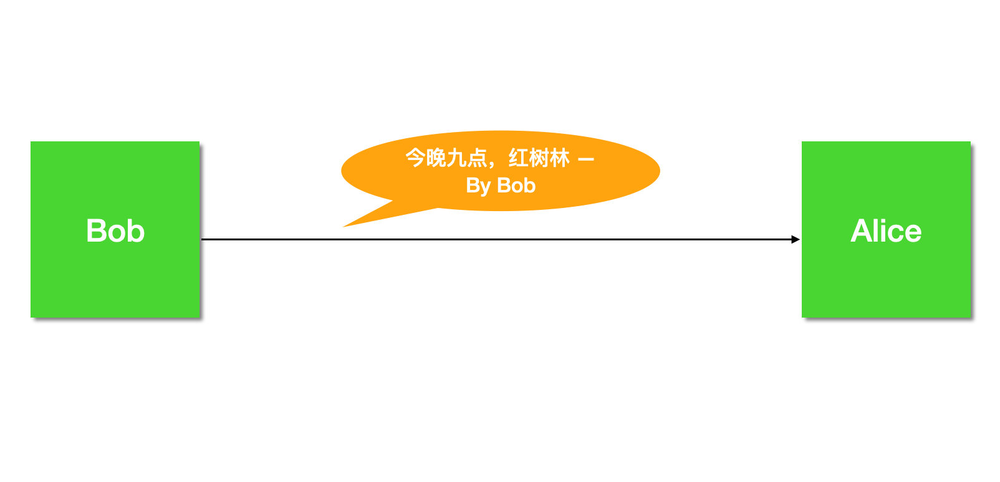
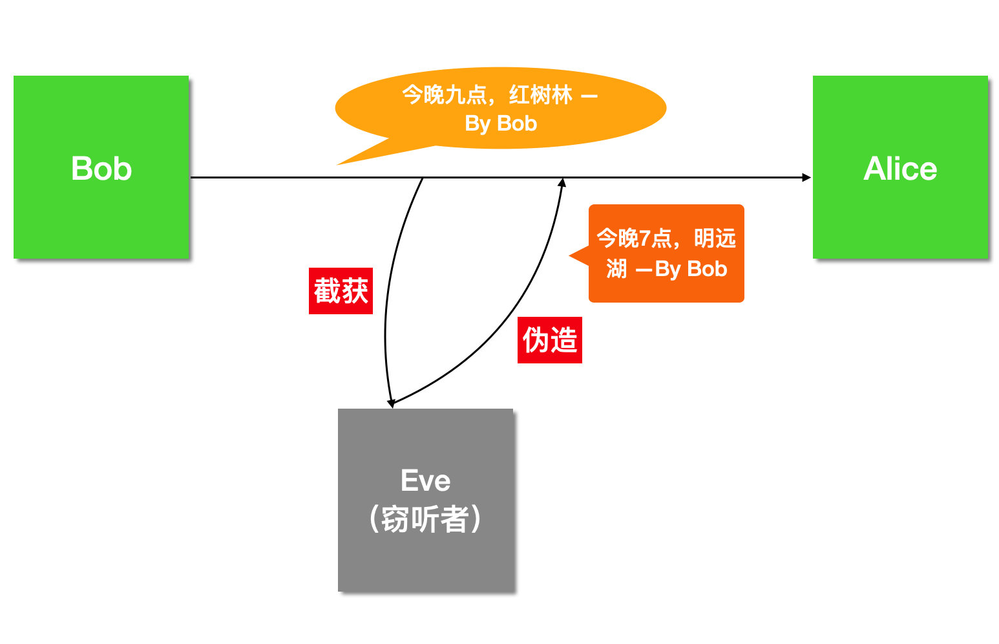
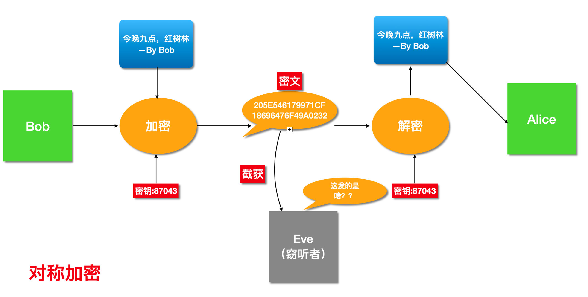
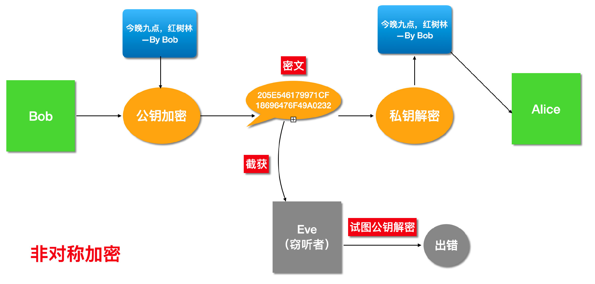
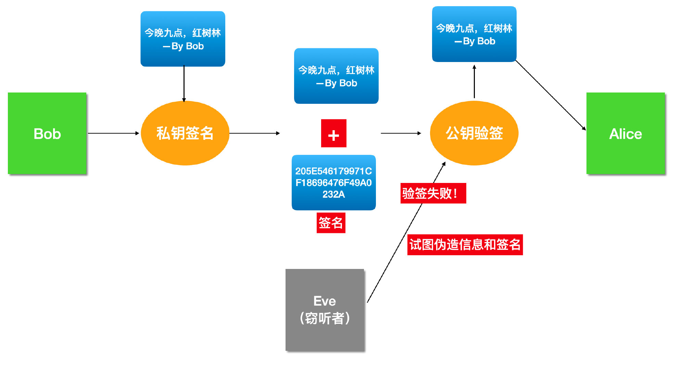
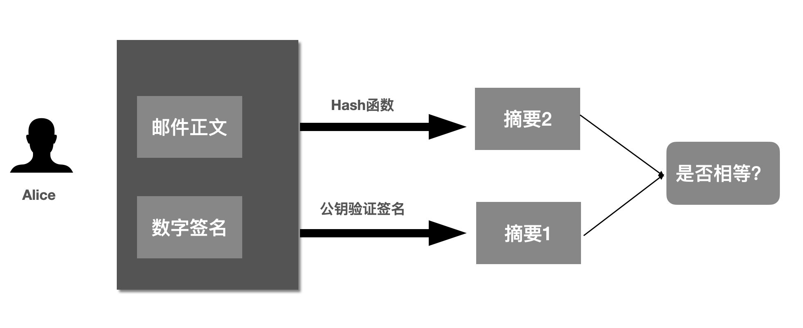
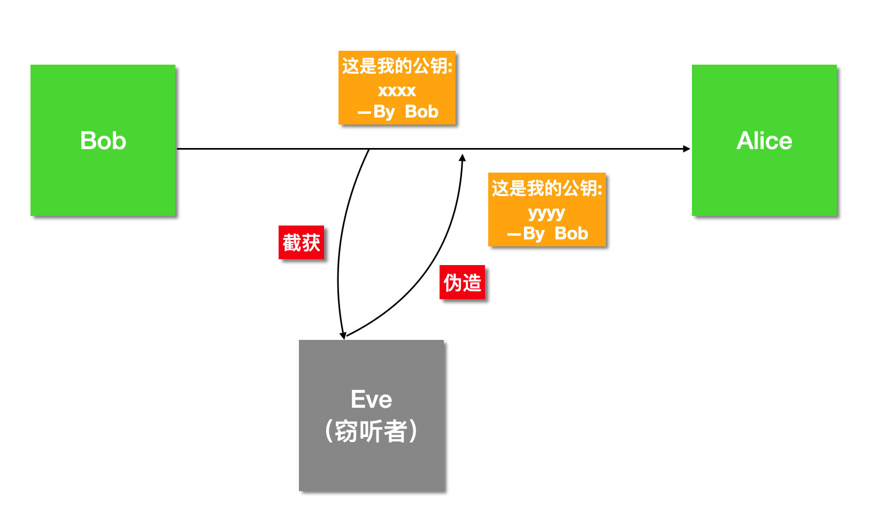
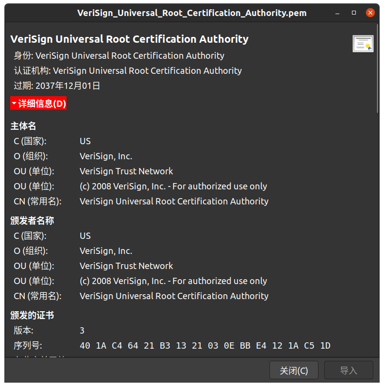

问题引入
- 非对称加密中，公私钥都可以加密，那么什么时候使用公钥加密，什么时候使用私钥呢？
- 什么是数字签名，数字签名的作用是什么？
- 为什么要对数据的摘要进行签名，而不是直接计算原始数据的数字签名？
- 什么是数字证书，数字证书用来干什么？
加密
加密是通过使用某种算法将明文转变为不可读的密文，密文通过密钥还原出原来的明文，从而达到保护数据不被窃取泄漏的方法。
通常使用的数据编码算法有：AES、RSA、MD5、BASE64、SM4等。其中AES、RSA 和 SM4 是较为常用的加密算法。MD5 是一种有损压缩的算法，无论数据量有多大，都会生成一个固定128位的散列值，由于其具有不可逆性、单向恒定性，通常用于验证文件完整性、口令加密以及数字签名。BASE64 算法不需要使用密钥，任何人都可以使用该算法编码及解码数据，因此不用于数据加密中。
对称加密
如果通信双方使用明文进行交流，那么极易被第三方截取并篡改消息内容，因此通常需要将数据进行加密后进行传输。


加密最简单也最易理解的方式便是对称加密，通信双方使用相同的密钥进行数据加密及解密。但是如果双方不能事先在线下约定好密钥，那么在传递密钥的的过程中因为需要使用明文传递，因此可能会被第三方截取并知悉密钥内容，所以并不是最安全的加密方式。

非对称加密
通信双方各生成一对公私钥，发信方使用收信方的公钥对内容进行加密，收信方使用自己的私钥即可解密。
由于公钥是公开的，因此可以使用明文传递，自己只要保存好私钥即可。

但是，非对称加密仍然存在问题。以上图为例，如果 Eve 也使用 Alice 的公钥冒充 Bob 向 Alice 发送消息，由于 Alice 的公钥是公开的，任何人都可以获得，并且 Alice 没有办法确认到底是 Bob 发送的还是 Eve 发送的消息。
如何证明我是我—数字签名
在生活中，我们通过签字、指纹等方式来证实我们的身份，因为这些是我们独有的标志。因此，需要 Bob 有独有的标志，并且其他人能够验证这个标志——数字签名。
那么对于 Bob 来说，有什么是他独有的么？Bob 的私钥！
Bob 使用自己的私钥对邮件内容进行签名，Alice 收到信息后使用 Bob 的公钥进行验签，判断该签名是否来自于 Bob。

那么，Eve 有可能篡改内容并伪造 Bob 的签名吗？不可能。内容一旦发生改变，签名也需要通过使用 Bob 的私钥重新计算，只要 Bob 保证自己的私钥不发生泄漏，Eve便不能够篡改内容。
通常情况下，邮件内容会经过加密进行传输，而不是如上图般明文传输。进行签名时，一般不会直接采用正文进行签名，因为数字签名属于非对称加密，非对称加密依赖于复杂的数学运算，包括大数乘法、大数模等等，耗时比较久。同时，如果使用正文计算签名，也有可能会被第三方使用公钥得到正文内容。
如果数据量大的时候计算数字签名将会比较耗时，所以一般做法是先将原数据进行 Hash 运算（比如使用 MD5），得到的 Hash 值就叫做「摘要」，然后再对摘要进行签名。
「摘要」最好是不可逆转的，一般使用开头提到的 MD5 作为 Hash 函数，MD5 输出的结果固定位 128 位。
为什么「摘要」最好是不可逆转的？
因为既然 Alice 可以用 Bob 公钥解开签名，那么理论上其它人，比如 Eve 也可以使用 Bob 公钥解开签名拿到数据。
所以我们最好对数据的「摘要」进行签名，这样，Eve 就算解开签名，拿到的也是「摘要」，如果摘要是不可逆转的，也就是无法从摘要反推出原文，也就达到了保密的作用。
那么，接收方如何验证呢？以上图为例，Bob 使用 Alice 的公钥对数据进行加密，并使用 Hash 算法生成数据摘要，使用自己的私钥对摘要进行签名；Alice 收到信息后使用自己的私钥对数据进行解密，并使用相同的 Hash 算法生成摘要2，然后使用 Bob 的公钥从签名中提取出摘要1，对比摘要1和2判断内容是否被篡改。

数字签名是用于判断和防止数据被篡改的，并不是用于数据加密的。一般情况下，由于非对称加密运算复杂，耗时较长，所以通常首先使用非对称加密传递双方使用的对称加密的密钥，后续使用对称加密进行通信。
数字证书
现在，Bob 和 Alice 可以依赖于对称加密进行保密通信，也可以依赖于数字签名验证对方的消息。但是，首要条件是 Alice 拿到的 Bob 的公钥的确是 Bob 的。
假如 Eve 冒充 Bob 将自己的公钥发送给 Alice，那么此后凡是 Bob 的消息都会验签失败，反而会被认为是伪造的，冒充的。

为什么 Eve 能够冒充 Bob 将自己的公钥发送给 Alice 呢？是因为 Bob 的公钥是直接通过网络发送给 Alice 的，在发送公钥的过程中没有做到防篡改、防冒充。那么如何实现防篡改防冒充呢？需要通过数字签名实现，而数字签名又需要对方持有发送者的公钥才能实现，似乎陷入了死循环......
因此，我们需要一个第三方机构来证明 Bob 的公钥是 Bob 的公钥。为了解决该问题，引入了数字证书。
数字证书，也就是公钥的数字签名。但是这个签名不能由我们来做，而是需要可信的第三方机构来证明，也就是证书颁布机构（CA）。CA 会将：证书的颁布机构、有效期、公钥、持有者(subject)等信息用 CA 的私钥进行签名。并且将签名结果和这些信息放在一起，这就叫做「数字证书」。
然后，Bob 可以申请一个数字证书，将自己的数字证书发送给 Alice ，Alice 使用 CA 的公钥进行验签。因此，Alice 首先需要下载安装CA的证书。验签通过后可以证明这是 Bob 的公钥，便可以通过之前的讨论进行通信。
那么 Eve 能否修改证书中的内容并重新计算一次签名呢？由于证书的签名是通过 CA 的私钥进行的，Eve 没有 CA 的私钥，因此无法对证书进行篡改和冒充。
CA 是存在等级的，下级的 CA 需要上级的 CA 进行签名，因此一定存在根证书颁布机构。那么根证书颁布机构的证书是由谁签名的？答案是自签。这是信任链的基础。根证书的可靠性如何保证？根证书是由操作系统和浏览器厂商预安装好的。
在 Ubuntu 中可到 /etc/ssl/certs 目录下查看。如下所示：

问题解答
- 非对称加密中，公私钥都可以加密，那么什么时候使用公钥加密，什么时候使用私钥呢？
- 加密场景下，希望别人都可以加密，但只有我能解密，即公钥加密，私钥解密
- 签名场景下，希望只有我能签名，但别人都可以验签，即私钥签名，公钥验签
- 什么是数字签名，数字签名的作用是什么？
- 数字签名是将数据的摘要通过私钥进行签名，并和加密后的数据一同发送
- 防篡改，防冒充
- 为什么要对数据的摘要进行签名，而不是直接计算原始数据的数字签名？
- 数据量可能比较多，使用非对称加密比较复杂，增加时耗，因此对数据的摘要进行签名
- 同时也防止第三方拿到签名后使用公钥解出原始数据
- 什么是数字证书，数字证书用来干什么？
- 数字证书是证书颁发机构使用自己的私钥对申请者的公钥进行签名认证
- 解决公钥的安全分发问题，也奠定了信任链的基础
References：https://segmentfault.com/a/1190000024523772